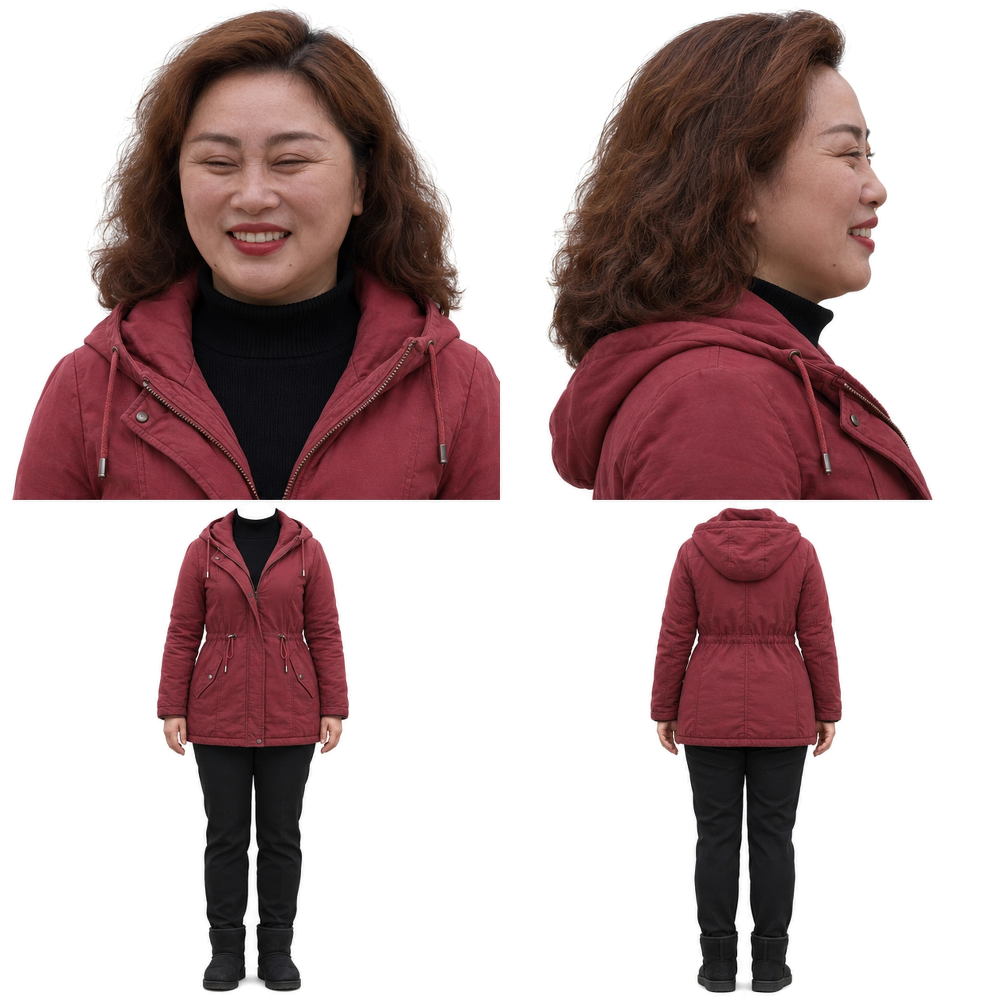
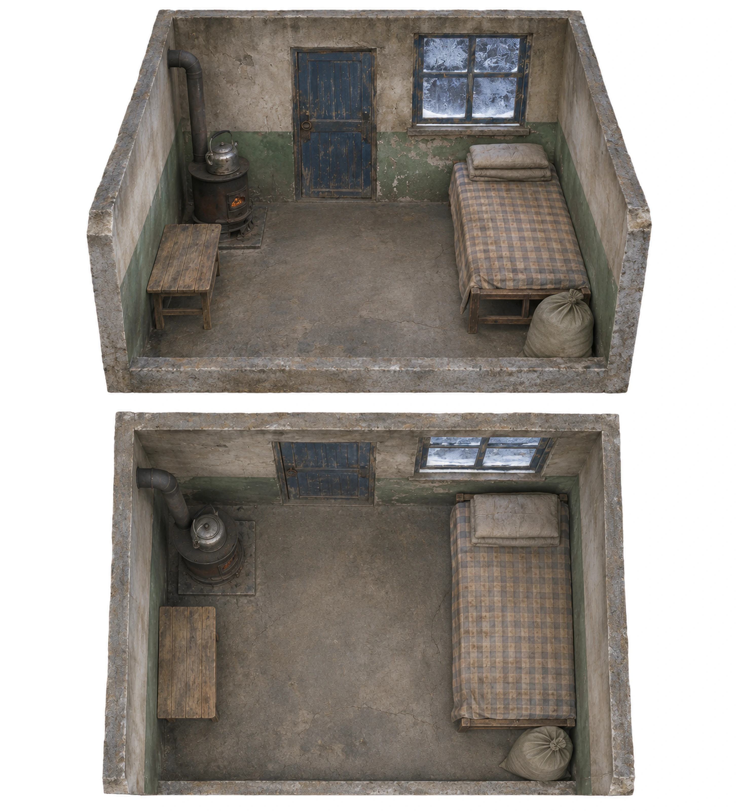
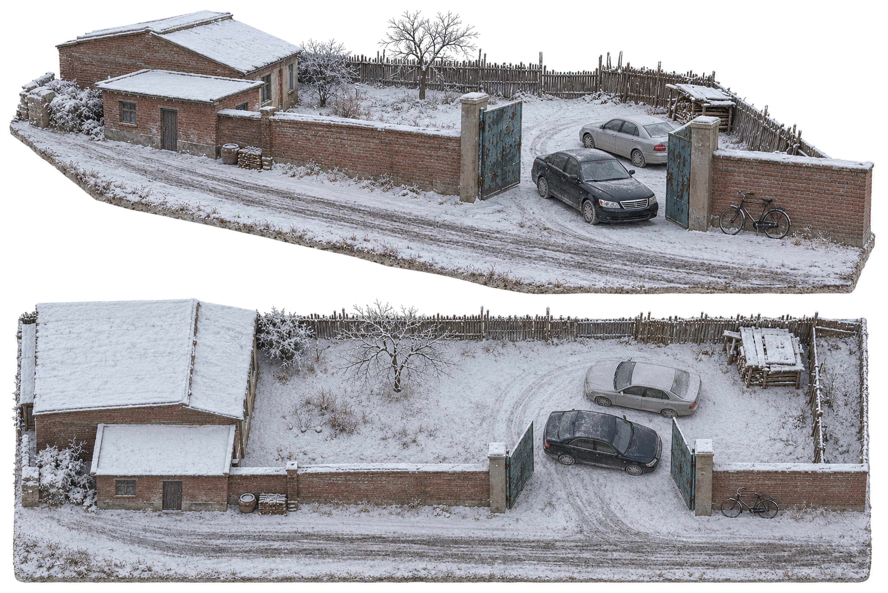
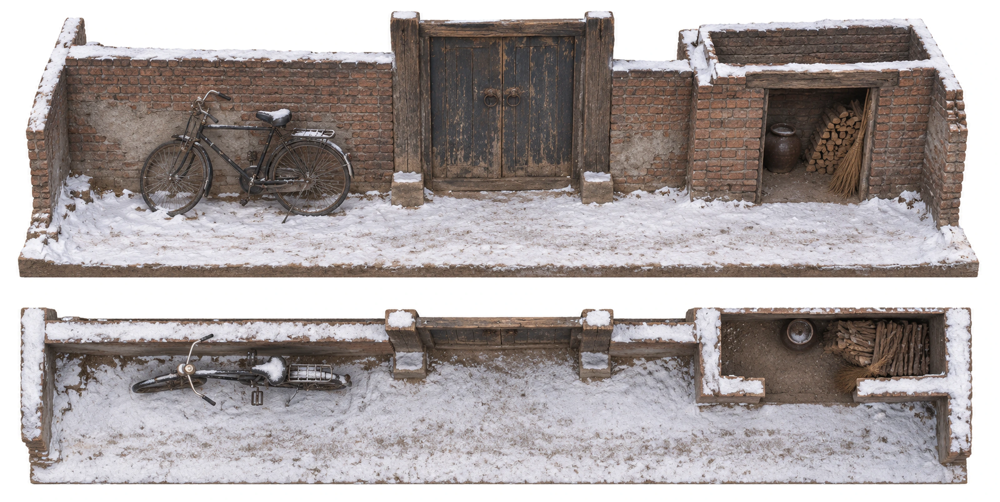
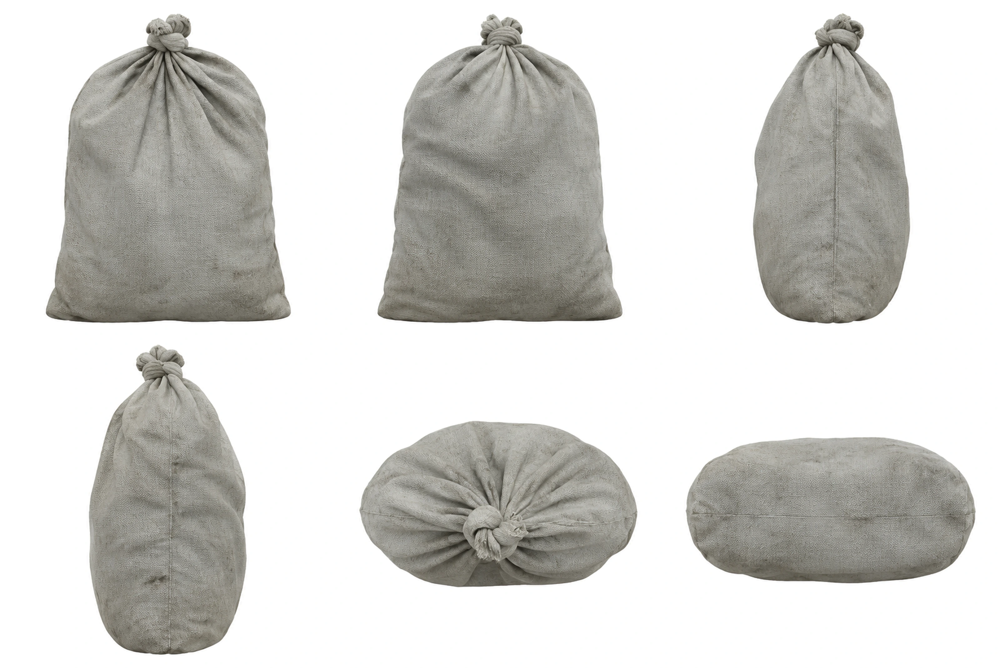
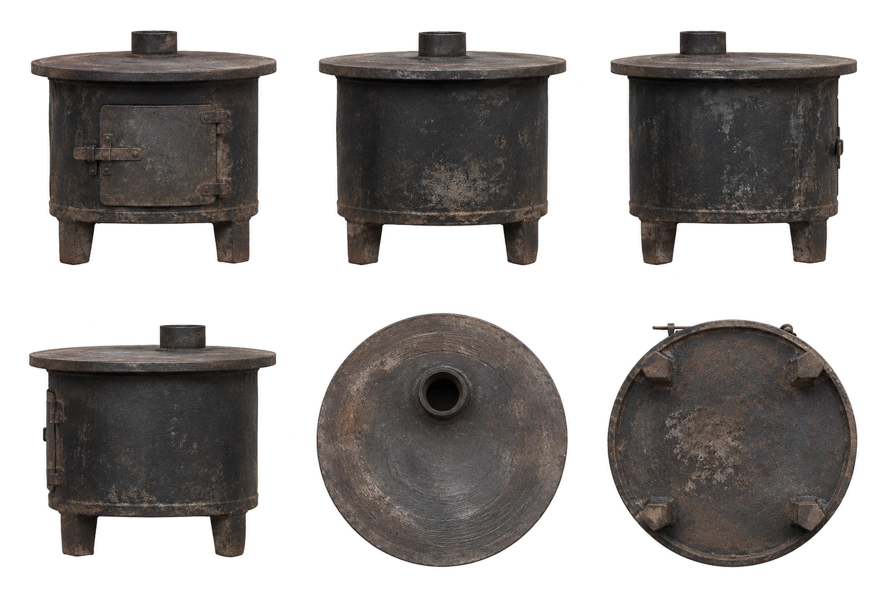
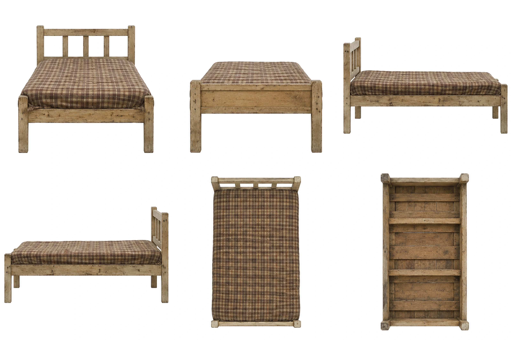
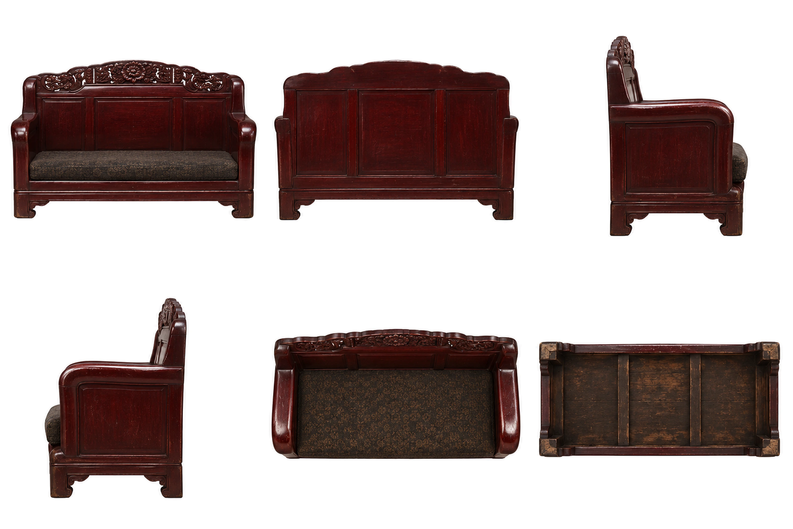

国内短剧
国内短剧 · 二集 (2)
正在连接在线视频…
视频简介
父亲把两个弟弟的难处摆在桌面，要求长期照顾父母的李水生让步，众人还安排他暂住别处。水生拎包到冷清旧屋，独自生火整理行李。另一头，留在堂屋的人继续讨论是否该给水生拆迁款，以及他若离开村子，谁来照料父母。水生回到门外，听见了对自己往后生活的安排。
在快手观看原视频 ↗制作资产
角色资产

李水生
剧情身份与表演 李家长子，长期照料父母。对弟弟回乡和拆迁款分配的谈论保持克制。 造型与动作连续性 短发，深橄榄旧厚外套与深裤。动作重心放在抱陶罐、夹烟、推车和搬箱。 图像对应 左上正脸，右上侧脸，左下正面服装，右下背面服装。未完整入镜的鞋裤与服装背面按角色造型补全。

李青华
剧情身份与表演 返乡的戴眼镜弟弟，从深色轿车驾驶位与李水生打招呼。 造型与动作连续性 短黑发、细框眼镜、深色立领冬装。隔车窗递烟，入堂屋后坐在长辈旁。 图像对应 左上正脸，右上侧脸，左下正面服装，右下背面服装。未完整入镜的鞋裤与服装背面按角色造型补全。

李海旺
剧情身份与表演 随浅灰车回村的弟弟，请李水生帮忙搬车上的东西。 造型与动作连续性 短黑发，深蓝近黑的西装外套和深色内搭。下车后转身示意后备箱。 图像对应 左上正脸，右上侧脸，左下正面服装，右下背面服装。未完整入镜的鞋裤与服装背面按角色造型补全。

周丽红
剧情身份与表演 与李海旺一道在院门口出现，参与返乡寒暄。 造型与动作连续性 栗色卷发，暗红连帽冬外套与黑高领。 图像对应 左上正脸，右上侧脸，左下正面服装，右下背面服装。未完整入镜的鞋裤与服装背面按角色造型补全。

张桂兰
剧情身份与表演 李家长辈，堂屋里招呼李水生入席。 造型与动作连续性 深色包头巾、灰色夹棉衣，坐姿略前倾。 图像对应 左上正脸，右上侧脸，左下正面服装，右下背面服装。未完整入镜的鞋裤与服装背面按角色造型补全。
李守成
剧情身份与表演 李家长辈，堂屋里以补偿款数额开启家人最关心的话题。 造型与动作连续性 黑色针织帽、褪色炭灰棉袄，持铜锅烟杆，开口前停顿。 图像对应 左上正脸，右上侧脸，左下正面服装，右下背面服装。未完整入镜的鞋裤与服装背面按角色造型补全。

李青华同行女子
剧情身份与表演 与李青华同车出现，聚会时坐在他旁边。画面未提供明确姓名。 造型与动作连续性 深色直发、黑色外套、灰褐高领，表演以旁听和观察为主。 图像对应 左上正脸，右上侧脸，左下正面服装，右下背面服装。未完整入镜的鞋裤与服装背面按角色造型补全。

李家孩童
堂屋群像里坐在桌边的孩子，穿蓝色绗缝冬外套，兜帽边缘有棕色绒毛。成片里无清晰姓名。复拍时保持衣服体积和坐席连续。全身未入镜处依据冬装补全。
场景资产

水生临时住处
水生临时住处的场景视觉设定，用于空间布局、光影与镜头背景。

雪中村巷与院门
雪中村巷与院门的场景视觉设定，用于空间布局、光影与镜头背景。

夜间雪巷与旧门
夜间雪巷与旧门的场景视觉设定，用于空间布局、光影与镜头背景。

李家堂屋
李家堂屋的场景视觉设定，用于空间布局、光影与镜头背景。
道具资产

灰色行李布包
外观与材质 浅灰旧帆布，提拎时下坠，口部拢紧。 镜头用途 跨门时拎在身侧，到床边后打开。 图片上排前、后、左，下排右、俯、仰；成片未入镜的结构按可见部分补全。

铝壶
外观与材质 磨旧铝壳、活动弧形提梁和短弯壶嘴。底圈有烟灰。 镜头用途 置于小卖部取暖炉旁，交代店内的日常状态。 图像对应 上排依次为前、后、左，下排依次为右、俯、仰。成片未展示的面按可见结构补全。

铸铁取暖炉
外观与材质 烟熏黑色炉体和平直炉面，带投料口。 镜头用途 近窗固定摆放，与铝壶与窗外积雪形成冷暖对比。 图像对应 上排依次为前、后、左，下排依次为右、俯、仰。成片未展示的面按可见结构补全。
白底蓝边搪瓷杯
外观与材质 白色搪瓷杯体、蓝色杯沿，带弧形把手。 镜头用途 挂在布包外侧，步行时随着布包摆动。 图片上排前、后、左，下排右、俯、仰；成片未入镜的结构按可见部分补全。

旧式自行车
外观与材质 黑色钢架，带窄挡泥板、后货架和旧鞍座。 镜头用途 水生在院门边推车；进门前后统一车把朝向和停放位置。 图像对应 上排依次为前、后、左，下排依次为右、俯、仰。成片未展示的面按可见结构补全。

临时住处旧木床
外观与材质 低矮旧木单人床，配暗棕格纹被面。 镜头用途 水生坐在床沿，摊开随身行李。 图片上排前、后、左，下排右、俯、仰；成片未入镜的结构按可见部分补全。
堂屋暖水瓶
外观与材质 暗红色老式保温瓶，配深色把手与瓶盖。 镜头用途 固定于堂屋窗沿，在桌边反打中形成纵向轮廓。 图片上排前、后、左，下排右、俯、仰；成片未入镜的结构按可见部分补全。

铜锅烟杆
外观与材质 深木细杆与小号铜烟锅，保留暖色金属边缘。 镜头用途 李守成在堂屋点烟，铜锅插入特写衔接开口。 图像对应 上排依次为前、后、左，下排依次为右、俯、仰。成片未展示的面按可见结构补全。

堂屋木沙发
外观与材质 深红褐漆木座，雕花靠背，宽扶手。 镜头用途 贴堂屋后墙，决定张桂兰、李青华及同行者的坐席顺序。 图像对应 上排依次为前、后、左，下排依次为右、俯、仰。成片未展示的面按可见结构补全。

堂屋木桌
外观与材质 深色老木矩形台面，四方腿，边缘磨损。 镜头用途 放在堂屋中央；宽幅全景以它组织两侧座位。 图像对应 上排依次为前、后、左，下排依次为右、俯、仰。成片未展示的面按可见结构补全。
剧本与分镜
完整剧本与分镜脚本
国内短剧 · 二集 (2) 原片时长 170.55 秒 故事梗概 父亲把两个弟弟的难处摆在桌面，要求长期照顾父母的李水生让步，众人还安排他暂住别处。水生拎包到冷清旧屋，独自生火整理行李。另一头，留在堂屋的人继续讨论是否该给水生拆迁款，以及他若离开村子，谁来照料父母。水生回到门外，听见了对自己往后生活的安排。 人物 李水生承受家人的安排；李守成主导分配谈话，张桂兰追问结果；李青华与李海旺各自参与说服。周丽红提出让海旺送人，同行女子和孩童在家庭聚会中旁听。 场景 李家堂屋是正面冲突与背后议论的同一空间；雪巷和旧门是进出与偷听的过渡；水生临时住处以旧床和炉火表现独处。 道具用途 木沙发与桌确定坐席。布包、搪瓷杯、木床和炉壶完成搬出及落脚的动作。自行车留在门边，暖水瓶是堂屋窗沿陈设。 剧本与分镜 根据原片抽帧重建。引号标示画面可辨字幕句段，拟音为制作建议，单镜头时长为复拍方案。 | 镜号 | 画面内容 | 镜头视角 | 使用资产 | 动作描述 | 台词/旁白 | 音效 | 单镜头时长 | | 01 | 水生坐在堂屋边缘，避开众人的视线 | 平视中近景 | 李水生、李家堂屋 | 水生双手撑膝，面对一桌人等待长辈开口 | — | 屋内底音、炉火 | 8.00秒 | | 02 | 母亲和青华望向父亲 | 横向三人中景 | 张桂兰、李青华、同行女子、堂屋木沙发 | 青华略转身，试探父亲会怎么说 | 青华“爸这……” | 衣物窸窣 | 7.00秒 | | 03 | 父亲先提起海旺的难处 | 平视双人中景 | 李守成、张桂兰、铜锅烟杆 | 父亲压低声音，母亲听着 | 守成“海旺厂子这两年也不容易” | 烟杆轻碰 | 8.00秒 | | 04 | 水生尝试插话 | 斜角群像全景 | 李家众人、堂屋木桌 | 水生从桌边望向父亲，桌边几人保持安静 | 水生“爸” | 话音后短暂停顿 | 6.00秒 | | 05 | 父亲要长子让步 | 过肩反打 | 李守成、李水生、张桂兰 | 父亲稳坐沙发，把话转向水生 | 守成“你这个当大哥的让一让怎么了” | 室内底音 | 8.00秒 | | 06 | 老房子也成了分配话题 | 正面近景 | 李水生、李家堂屋 | 水生收紧手指，听完对面的人安排他暂住 | “房子也是家里的”“这几天你先住那边” | 衣袖摩擦 | 9.00秒 | | 07 | 青华接话安抚 | 母亲侧面双人近景 | 李青华、张桂兰、同行女子、木沙发 | 青华向大哥挤出笑，同行女子坐在身侧 | 青华“哥你这也不亏” | 轻咳 | 10.00秒 | | 08 | 海旺在桌对面附和 | 越过水生肩膀的中景 | 李海旺、李家堂屋、堂屋木桌 | 海旺两手在桌面交叠，身体微微前倾 | 海旺“可不是吗” | 桌面轻响 | 8.00秒 | | 09 | 周丽红提出送人 | 桌侧中景切近景 | 周丽红、李海旺、李家孩童、堂屋暖水瓶 | 周丽红看向水生，孩童贴桌而坐 | 周丽红“要不让海旺开车送你”“路还挺远呢” | 衣服擦桌声 | 12.00秒 | | 10 | 水生拎布包离开 | 低机位跟拍及手部特写 | 李水生、灰色行李布包、白底蓝边搪瓷杯、夜间雪巷与旧门 | 水生跨过门槛，布包垂下，杯子跟着脚步轻摆 | — | 门响、雪步、杯沿碰撞 | 13.00秒 | | 11 | 临时住处生火 | 炉侧中景接火光反打 | 李水生、水生临时住处、铸铁取暖炉、铝壶 | 水生屈身把手伸向炉门，橙色火焰照亮他的脸 | — | 炉门、火声 | 16.00秒 | | 12 | 在木床边打开包 | 室内横向中景 | 李水生、灰色行李布包、临时住处旧木床 | 水生坐到床沿展开布包，起身停在房间里 | — | 帆布摩擦、炉火余声 | 15.00秒 | | 13 | 水生回到旧门边 | 门外侧逆光中景 | 李水生、夜间雪巷与旧门、旧式自行车 | 车靠着门边，水生伸手去碰门 | — | 雪步、门扣 | 7.00秒 | | 14 | 青华谈补偿款和大哥的婚事 | 过张桂兰肩部中近景 | 李青华、张桂兰、同行女子、堂屋木沙发 | 青华转向母亲，压低语气问她 | 青华“妈大哥真有了拆迁款”“人家女的愿不愿意跟大哥留村里” | 堂屋底音 | 14.00秒 | | 15 | 海旺说起父母平日的照料 | 桌侧中景 | 李海旺、周丽红、堂屋木桌 | 海旺看向长辈，周丽红收住笑意 | 海旺“这些年爸妈有个头疼脑热” | 轻敲桌面 | 8.00秒 | | 16 | 母亲追问到底给不给水生 | 沙发群像近景 | 张桂兰、李守成、李青华、同行女子 | 母亲看向家人，青华迟疑，父亲低头 | 张桂兰“八十万一分不给他吗” | 短暂停顿 | 12.00秒 | | 17 | 水生站在门外听见屋里议论 | 贴门框侧面中近景 | 李水生、夜间雪巷与旧门 | 水生停住开门，脸侧向屋里；镜头停在雪夜门边 | 屋内画外“让他一辈子留村里给你们养老” | 漏出的室内人声、雪风 | 9.55秒 | 时长合计 170.55 秒